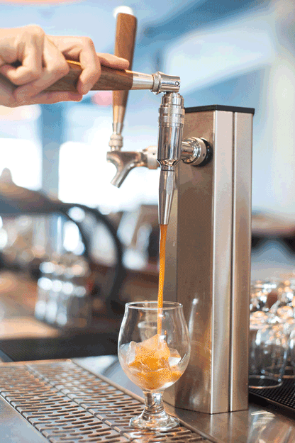
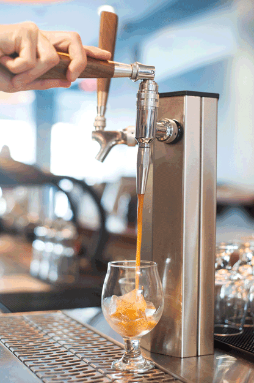
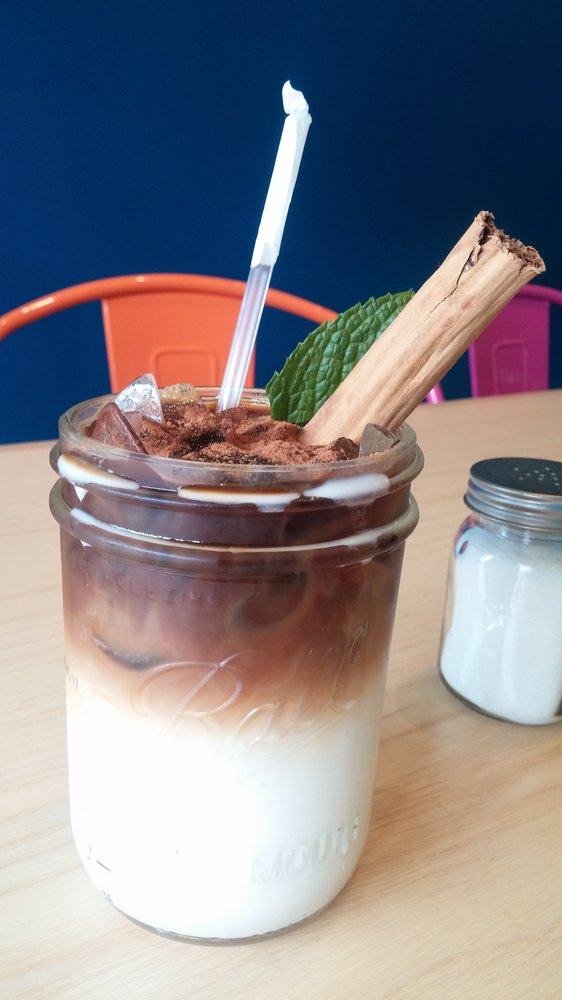

Cold brew + Nitro!
A sweeter and creamier version of the original can be made by adding nitrogen, which is typically stored in a pressurized keg and poured from a tap.
 Laura Metzler / BuzzFeedI distinctly remember my first cold brew coffee (with coconut milk, of course). I was sitting in the sun at Pannikin after a long run with friends. Nothing had ever tasted so delicious.
A sweeter and creamier version of the original can be made by adding nitrogen, which is typically stored in a pressurized keg and poured from a tap.
 Laura Metzler / BuzzFeedPossibly one of the most ingenious combinations to date, it's only a matter of time before this delightful beverage gains a cult following.
 Mateo's Taqueria / Yelp